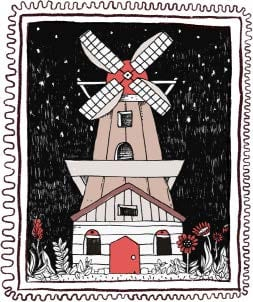
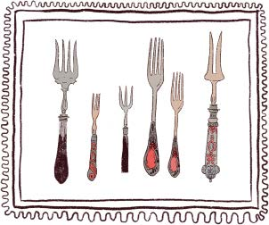
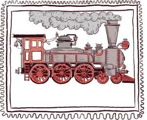
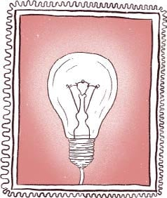
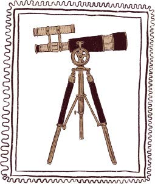
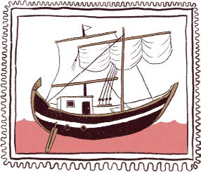

EDAD MEDIA
Siglo V hasta siglo XV
• Relojes mecánicos
• Tenedor
• Molino de viento
EDAD MODERNA
Siglo XV hasta mediados del siglo XVIII
• Invención de la imprenta
y los libros
• Telescopio
• Viajes a nuevos territorios
SIGLO XVIII A XIX
• Máquina de vapor
• Tren de vapor
• Electricidad
Revolución Industrial